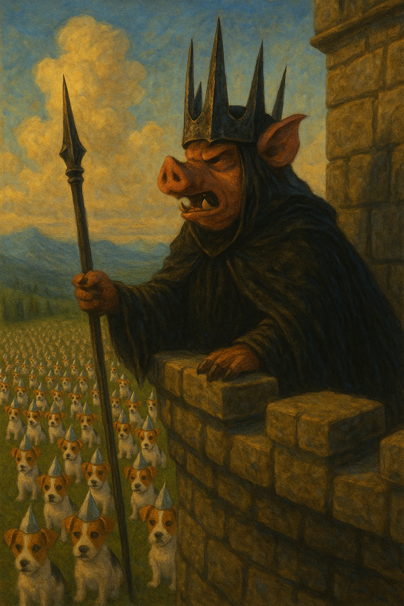

The UOC Observer
H'Online Since 2024 Fwend

I'm running fhwough the hedges suwwounding UOC, Muldoon h'is h'orchestwating the chase h'and they h'iz closing h'in h'on their pway. A bang, a sparkle, a firework fhwown h'in the diwection h'of a pursuing Kittej buys me some time, but the pack h'is gaining.
I set the caffhwine wheel down h'into the djirt h'and light the fjuse, running h'as fjast has I can! The pursuing kittejs behind h'are mesmerised h'at the twirling, the whirling, the beauty h'of ljife.
"H'Idiots," says Muldoon gwumpily. He picks h'up the tjin can phone h'and speaks h'into h'it. Grand Vizier H'Allen h'is h'on the h'uvver h'end:
"The h'emperor h'is shocked! A direct attempt h'on his thwown! Who knows h'if he'll h'ever wecover his compurrsure. H'It h'is h'of the h'utmjost h'impjortance dat you bring this one h'in Muldoon Pasha."
Muldoon ponders this for a mjoment, befjore saying "send them h'in...h'all h'of them."
Grand Vizier H'Allen gives h'out a gjulp h'on the phjone: 'H'iz you sure? They wemain h'untjested...'
A pause. A silence.
"Sjend them h'in."
From his vantage point atop the ruined UOC tower, the Witch King h'of Ham-Mar (formerly known as Weggie the Pig) watched through slitted eyes as his Devşirme-trained Behbejs mobilized. The former pride of Jack Russell's UOC now moved with terrifying precision, their once-cheerful yips replaced by mechanical efficiency.
"Let them hunt," he whispered, his cloven hoof tracing arcane symbols in the air that shimmered briefly. "The fire-starter will learn what happens to those who disturb the H'Empjire's peace."
Pyro sits quietly h'in a twee, sjafe fwom his pursuers who has dwopped h'away. He didnt hecking mean to, he was h'only tjesting h'it h'out, h'and he hadz h'it under contwol, he hadz a fjull bljadder he swearsies!!
A clang h'in the distance causes Pyro to stop suddenly. He peers h'out, his charred paws suppjorting him h'as he ljooks h'into the distance. The clanging h'again, rhythmic, closing h'in h'on him fwom h'all directions...
"Blarbasloppa pjots! Behbejs!!"
Pyro twies to climb higher h'into the twee but a chirruping sound makes him stop h'in his twacks. He looks behind but sees nuffink, looks back h'and for the bwieffest mjoment sees a Behbej stjaring back h'at him - its eyes glassy, its once-floppy ears now erect with military precision, the Kittej insignia gleaming on its collar.
Pyro reaches back h'into his bag, looking for a firecwacker h'or a wocket that could help...a soft thud. Pyro turns h'and cjomes face to face wiv h'annuver Behbej, another gentle fud h'and a Behbej lands h'on a bwanch close by.
Pyro looks h'up...h'and sees hundweds h'of fjaces ljooking down h'at him. He goes for a match - he dont have much tjime - h'if he can just get h'it lit h'in tjime he might have a chance.
The ljight h'of the match hightlights a Behbej h'and he sees h'it twansfjorm befjore his very h'eyes - its mouth distending unnaturally, rows h'of needle-like teeth unfolding like some hellish pocketknife.
A hiss. A stinging pjain h'acwoss his njose. He's fjalling, fjalling, fjalling.
H'As he ljands h'in the h'undergwowff he feels the Behbejs ljanding h'on tjop h'of him, clawwing, scwatching, yowling in perfect unison: "HE DIDNT HECKING MEAN TO SET H'IT H'ON FJIRE...THIS TIME"
WHITE.
A light so pure it burns without heat.